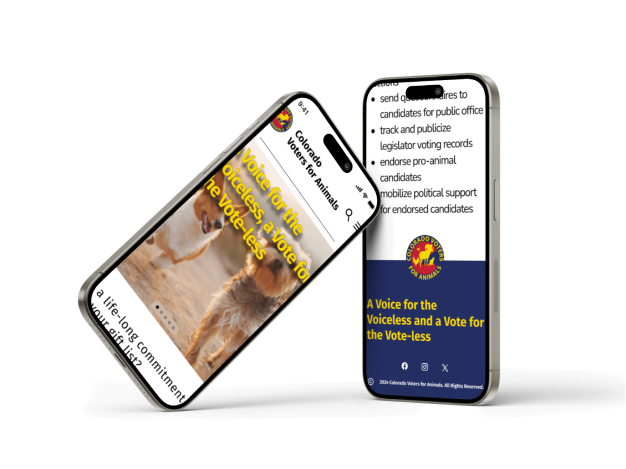

Option A


The Colorado Voters for Animals is a Colorado Non-Profit organization that works politically at the local, state and federal level to protect animals. Although their message is strong, there website aesthetics are not. My team completely redesigned to entire website from the ground up.